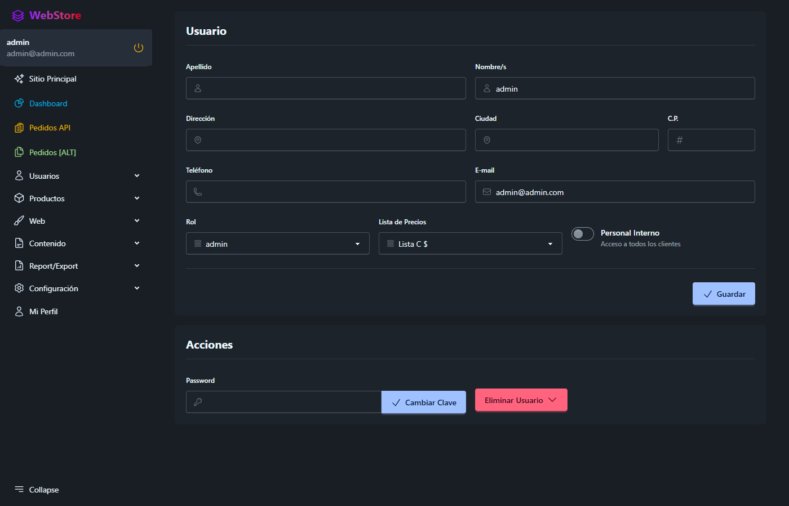
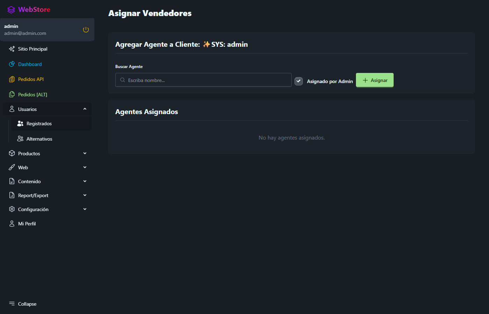

Gestión de Vendedores, Impersonalización y Tags
Referencia visual rápida que ilustra cómo los usuarios con rol sales acceden a la cartera de clientes, la persistencia de la identidad en la barra de navegación al actuar como cliente, y el nuevo flujo relacional de etiquetas de productos.
1. ¿Cómo un vendedor ve clientes en la barra de navegación?
Existen dos caminos complementarios según la política comercial del usuario.
Asignar Vendedores desde cada Cliente
Desde el listado de Usuarios, al editar un cliente (rol customer), se activa el botón inferior "Asignar Vendedores". Permite vincular uno o más vendedores específicos a su cuenta.


Switch "Personal Interno" en Vendedor
En la configuración del usuario vendedor (rol sales), al activar el switch "Personal Interno", el sistema lo habilita para ver a todos los clientes registrados, omitiendo la necesidad de asignaciones manuales individuales.

if ($this->is_internal || $this->role === Role::ADMIN) {
return User::where('role', Role::CUSTOMER);
}